A creator-commerce system built for repeat participation
The Zappos Influencer Program let creators curate products, share them with followers, and earn from resulting purchases. But as the program moved from launch to growth, the product needed to solve a harder problem: how to get creators to return, create more content, and make that content useful for shoppers.
I led the UX work from research through delivery, using analytics, creator feedback, shopper behavior, and concept testing to narrow a broad engagement problem into three product bets: a shareable Storefront, shoppable lifestyle content, and a clearer Hub for repeat creation.
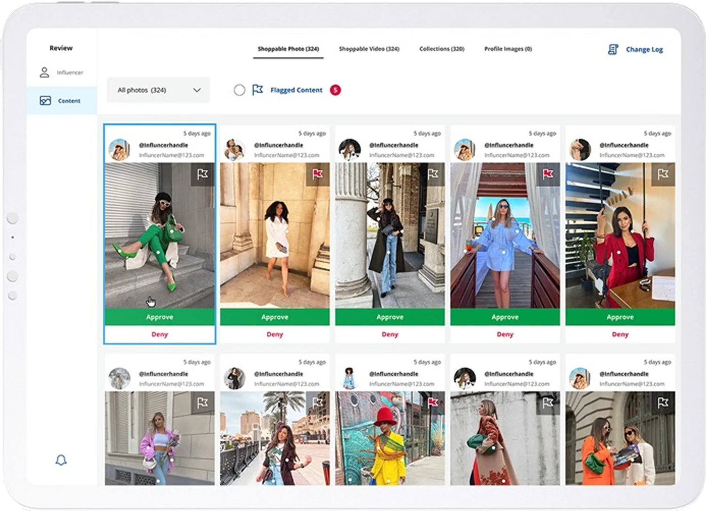
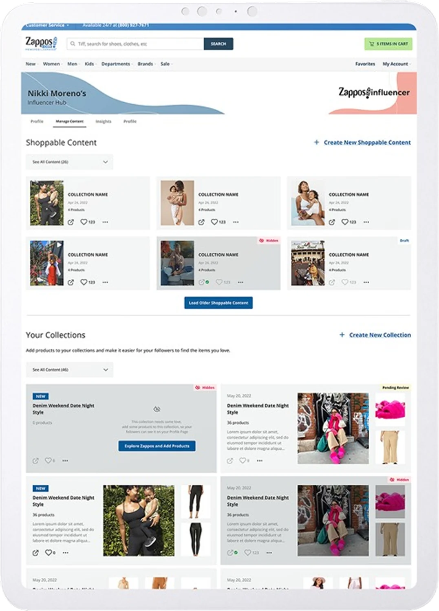
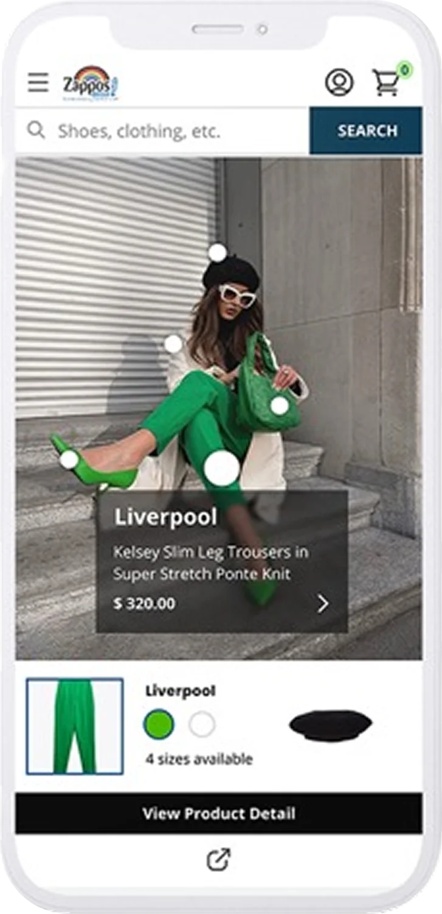
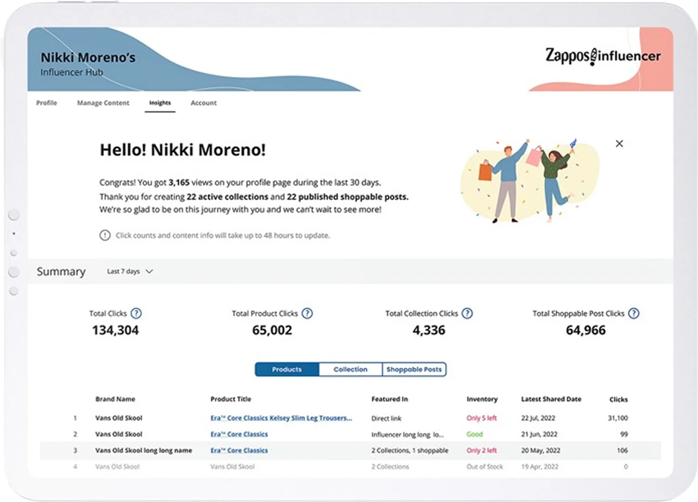
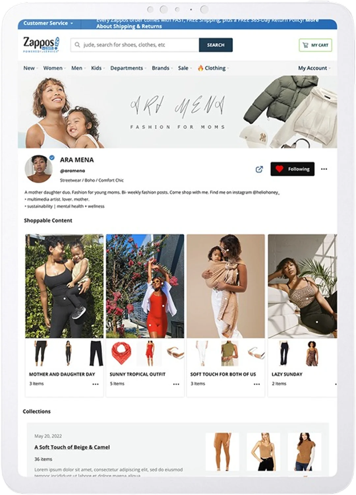
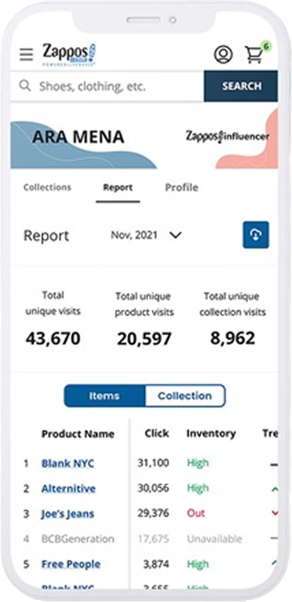
Leading research-driven UX from problem to handoff.
User Research
Ran market research, competitive audits, persona work and 1:1 interviews with influencers and customers to ground every decision in evidence.
UX Vision & Strategy
Set the UX vision and product direction: framing the hypotheses, prioritising features, and aligning the team on what would actually move engagement.
Workflows & Prototyping
Created end-to-end UX workflows, information architecture and quick interactive prototypes to make concepts tangible and testable.
Usability Testing
Planned and ran iterative usability sessions, then turned findings into simpler flows, clearer hierarchy and a more confident path to launch.
Design approach.
I used a design-thinking approach to move from ambiguous engagement signals to focused product bets. The work combined analytics, creator and shopper research, concept testing, and delivery constraints to identify where ZIP could most directly increase repeat content creation.
A design-thinking process helped turn a broad engagement problem into a focused creator-commerce strategy: understand the marketplace system, diagnose the content constraint, test product bets, and ship the experiences most likely to change creator behavior.
The marketplace could not grow without repeat creator behavior.
ZIP was designed to connect creator influence with Zappos shopping, but the experience was not yet generating enough repeat participation. Creators had other monetization options, and ZIP needed to earn a place in their regular publishing workflow.
The risk was bigger than low engagement. Without a steady flow of useful creator content, ZIP had fewer moments to inspire shoppers, fewer paths into product discovery, and a weaker case for scaling influencer commerce inside Zappos.
“Influencers are looking for different ways to monetize their content, and they have plenty of choices outside Zappos to earn money.” Research synthesis, 2022
The data pointed past traffic.
Creator activity was thin: influencers created roughly one collection on average and logged in only a few times a month. On the shopper side, high-traffic collection pages were not consistently converting, which showed that traffic alone was not the constraint.
- The signal
- High-traffic collection pages were not converting into meaningful shopping behavior. Several high-visit pages had zero sales, and bounce rates were frequently above 80–90%.
- What it told us
- Shoppers were arriving, but the content experience wasn't giving them enough confidence, context, or product inspiration to continue.
- Product implication
- We needed to improve the quality of the creator-to-shopper journey, not simply drive more traffic to the same surfaces.
Fresh content was what made ZIP worth revisiting.
ZIP was competing with shoppers' usual discovery habits: browsing new arrivals, social feeds, creator posts, and trend-driven recommendations. In apparel, that meant old content lost value quickly as seasons, styles, and inventory changed.
The product challenge was not just getting influencers to create once. ZIP needed a steady flow of fresh, shoppable content so customers had a reason to explore through creators, and creators had a reason to keep publishing.
The growth loop we needed to strengthen.
- Creator content output
- Shopper inspiration
- Product discovery
- Purchases
- Creator incentive
- Repeat content creation
Weak content output broke the loop from both sides: shoppers had less credible inspiration, and creators had fewer signals that publishing was worth repeating.
User Groups
ZIP had to work across three connected groups: influencers who created the content, customers who shopped it, and agents who kept it running. Because creator participation was the constraint, the design strategy focused first on making content creation easier, more useful, and more repeatable.
- Influencer Experience
- Customer Experience
- Agent Experience
Research and concept testing.
I treated research as a way to make prioritization safer. ZIP had a clear business goal, more active creators and more content, but the product path was still ambiguous. The wrong investment could improve the interface without changing the behavior that mattered.
The research combined creator behavior, competitive patterns, journey friction, 1:1 concept validation, and shopper response to imagery. Each activity helped answer a different decision: who to design for first, where creators lost momentum, what they expected to share, and what made influencer content useful enough for customers to shop.
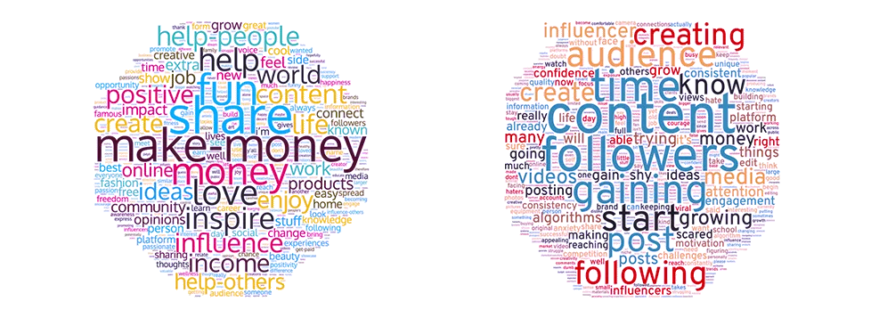
- Beauty & Cosmetics
- Apparel
- Jewelry & Accessories
Amazon Influencer Program audit
Auditing a mature competitor surfaced exactly the friction we needed to design around:
- The signup form was overloaded with information and technical jargon.
- Creators confused their profile with their storefront profile.
- Verification status was unclear: people didn't know if they were in.
- No justification for why so much information was required.
- Creators with fewer than 2k followers wanted a way in, too.
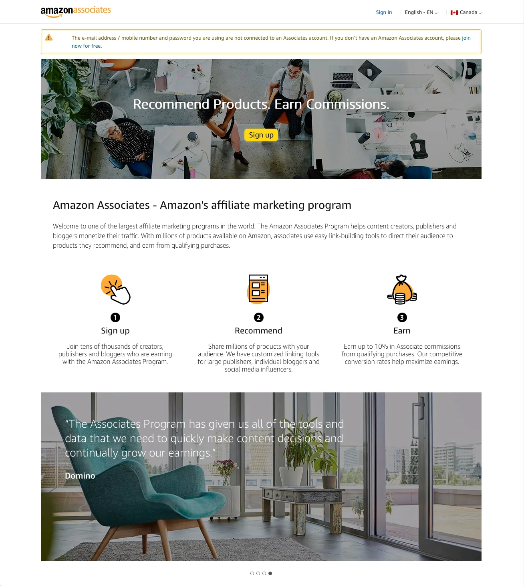
Eager to create, underserved by the tools.
The behavioural study told one story from two sides. People become influencers to monetize and share their passion: to make money, grow an audience and have a voice. The challenges they named, though, were all about the making: staying consistent, and getting their work in front of an audience. Most still leaned on photos (78%) and hadn't adopted an affiliate platform (59% had not), while the mature competitor we audited kept losing creators to a jargon-heavy signup and a confusing profile-versus-storefront model. The opening was clear: make the work dramatically easier to produce, and the path to earning far clearer.
Narrowing the audience before narrowing the solution.
Rather than treating "influencers" as one broad user group, I used the research to identify the creator behavior ZIP needed to support first: repeat publishing. That focus helped prioritize the opportunities most likely to change participation, from a shareable Storefront to faster shoppable content creation.
Audience definition
Defining the audience clarified that ZIP was not solving for celebrity-scale creators first. The MVP needed to support micro and mid-tier fashion influencers who were still building repeatable content habits and needed lightweight ways to publish, share, and learn what worked.
- Primary: micro influencers (1k–100k) and mid-tier influencers (50k–100k).
- Secondary: nano influencers (under 1k) building their audience.
Nikki Moreno
I am used to online services and I usually do my online shopping from Instagram.
Personality
Bio
She currently lives in New York. She's very active on social media and posts every day on different platforms. She also follows other fashion influencers and fashion brands for inspiration or to seek out collaborations. She is an early adopter of technology, and social shopping is no different, especially on Instagram.
Core needs
- Monetize her time and effort.
- Able to share her passion and knowledge about fashion with her followers.
- Scale her reach and grow her audience.
Pain points
- Limited ability to customize and organize her affiliate pages.
- Doesn't have full access to assortments through third-party platforms such as CJ and Upfluence.
- Not able to get enough data on which products she has recommended are selling the most.
- Wants to see what's out of stock so she can remove those items from her page.
Main social media
Platform
Journey mapping
The journey map showed where creator motivation dropped: setup felt unclear, publishing took effort, and the value of returning was not obvious enough. That pushed the design away from one-off content pages and toward a repeatable content system.
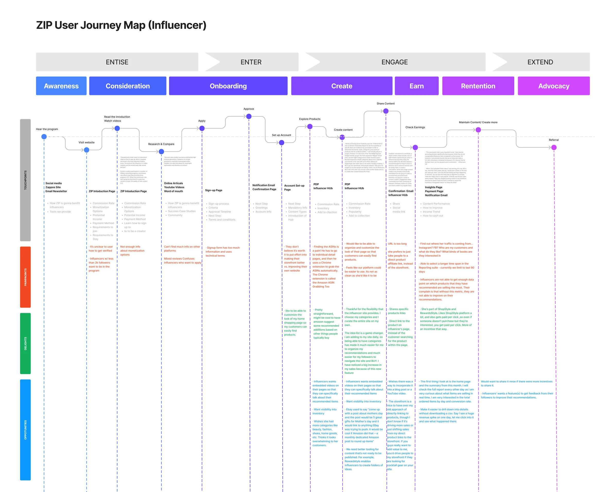
From insight to measurable objectives.
With the audience and the journey mapped, I turned the research into targets the team could hold itself to: how many creators stay active, how much they publish, and how often shoppers act on it. Success would mean a measurable shift in creator behaviour, not just a redesigned interface.
Set Goals & Objectives
2022 target user group
- Gen Z and Millennial female fashion influencers
Primary users
- Micro influencers (1k–100k)
- Mid-tier influencers (50k–100k)
- Zappos customers and influencer followers
Secondary users
- Nano influencers (under 1k)
Business objectives
- Increase influencer and customer engagement rate.
- Reduce audience bounce rate.
- Increase influencer retention rate.
- Increase content quality and quantity.
UX focus
Influencer experience
Give ZIP influencers one integrated place to create, organise, and share shoppable content, so publishing the next post is fast enough to become a habit.
The research narrowed the solution around a creator destination.
Concept testing clarified the biggest gap in ZIP's experience. Creators were not asking for a better dashboard first; they expected a persistent, shareable Storefront where their content, products, and personal style could live together.
That finding changed the product direction. The Storefront became the anchor for the redesign, with Shoppable Content and Hub improvements supporting the larger goal of repeat publishing.
Six hypotheses to validate
Synthesis pointed to six bets about what would lift engagement and monetization. Each became something we could prototype and test.
Content Types
Creators need more content types to engage audiences and unlock new monetization options.
Connect with Audience
Creators need higher visibility on their content to reach and grow more of their audience.
Content Creation
Creators need more autonomy to customise content and make it genuinely theirs.
Performance Insights
Creators need clear performance reports to decide what to promote and spot trends.
Share Options
Creators need share options tuned to each platform, Instagram in particular.
Customization
Creators need to personalise their pages to be recognisable and serve their followers.
What this meant for the product
The six hypotheses pointed to one larger issue: creators needed ZIP to feel less like a one-time content tool and more like a repeatable publishing workflow.
That shifted the product direction toward three connected areas: a creator destination that could be shared, richer content formats that made products more inspiring, and a Hub that made it easier to manage, customize, and improve content over time.
Concept validation
The Influencer Hub was the first surface we concept-tested, the dashboard where creators manage collections, track performance, and edit their profile.
Research goal
- Gather feedback on the existing Influencer Hub.
- Validate new concepts and features.
Research method
Interview & observation. I interviewed seven influencers who had collaborated with Zappos. Each joined a 45-minute 1:1 remote session, was walked through a series of screens with a survey at the end, and was encouraged to think aloud and ask questions about specific features on the page.
Research findings
I validated each assumption against what participants actually did and said: true or false.


Influencers mistook the Hub for a Storefront
In the Hub sessions this showed up as behavior, not opinion: participants kept customising the dashboard and hunting for a link to share it. The pattern was unanimous, which is what made it the clearest signal of the whole project: a dedicated storefront wasn't a nice-to-have, it was the mental model the product was missing.
- Influencers need a centralized storefront to display all their content.
- A storefront is regarded as shareable content.
- Influencers expect the storefront to be customised and personal.
- A storefront link is more sustainable than a content link.
Decision unlocked
Build a Storefront, not just a better Hub.
Why it mattered: creators wouldn't keep publishing into a dashboard they couldn't share. A storefront gave every post a permanent, personal home worth linking to, which is what makes the next post worth creating.
Customer experience with imagery content
I tested the shopping side with experienced Zappos customers, comparing a storefront rich with imagery content against one built around collections.
Imagery content influences the customer's decision
Imagery content shaped how customers made decisions. One participant originally wanted the boots in grey, which were out of stock in her size. Seeing the other colours styled revealed their versatility and pointed to a better choice for her.
Decision unlocked
Make shoppable imagery the core, not a garnish.
Why it mattered: styled imagery changed what shoppers bought, turning a generic collection page into credible product discovery. That made Shoppable Content the second new-feature bet, directly addressing the zero-sales signal from the data.
The product bets.
Testing narrowed six hypotheses down to three priorities: two new creation surfaces and one workflow optimization.
Influencer Storefront
A customisable, shareable home for each creator: collections, performance and bio in one place.
Shoppable Content
Lifestyle imagery with tagged products, turning inspiration into a direct path to purchase.
Influencer Hub
A reorganised dashboard with clearer navigation and prioritised actions.
Why these bets
The research pointed to several possible directions: better onboarding, deeper creator analytics, more monetization tools, social sharing, storefront improvements, and faster content creation.
We prioritized the surfaces most likely to increase content production and reuse: a clearer creator destination, a faster way to build shoppable content, and a simpler hub for managing work. These were the highest-leverage points in the creator workflow because they reduced effort before asking influencers to optimize performance.
We intentionally deprioritized deeper reporting and advanced monetization features for this phase. This wasn't the moment to optimize; creators first needed a reason and an easy path to publish at all.
Design response.
With the product bets defined, I organized the design work around the three parts of the creator-commerce loop: the destination creators shared, the content shoppers acted on, and the workspace creators returned to.
Scoping the MVP
I ran a workshop to define the MVP and align on a longer-term vision, keeping features consistent and shippable within an agile cadence.
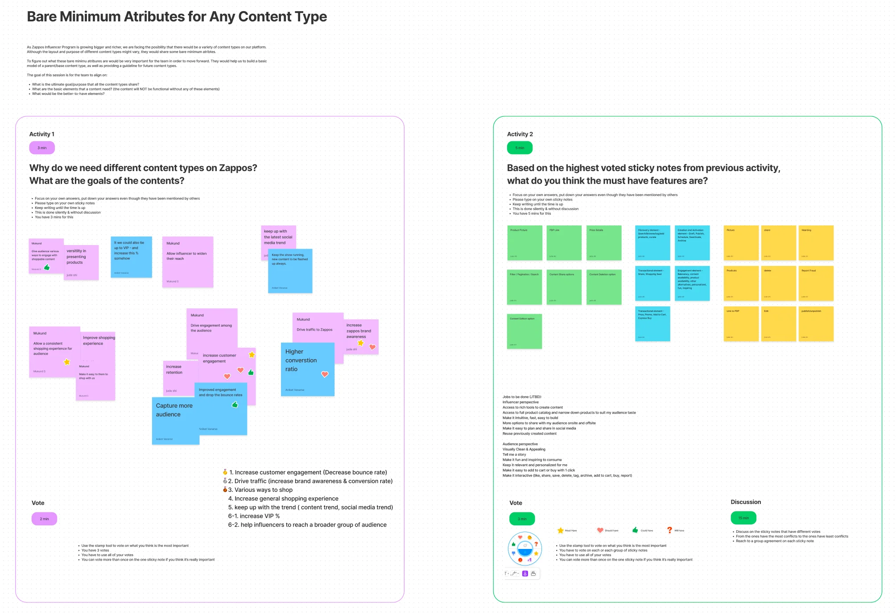
One system behind three surfaces
I mapped every content piece and how it related so the Storefront, Shoppable Content and Hub fit into one coherent system, with the flows that move a post from draft to published.
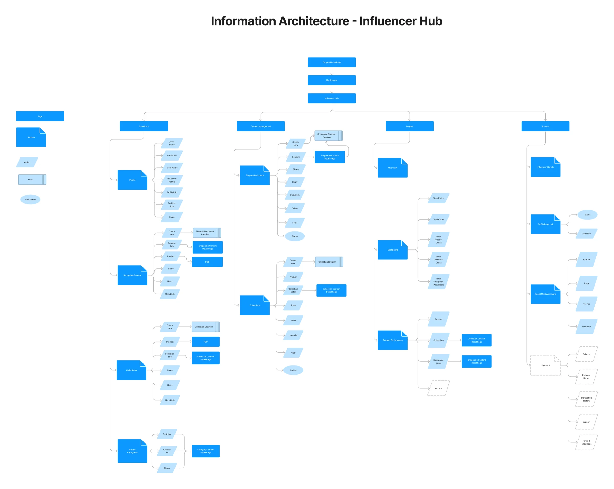


Wireframes
From the flows, low-to-medium fidelity layouts that reduced steps and surfaced the right information at the right moment, across the storefront and the shoppable content flow.
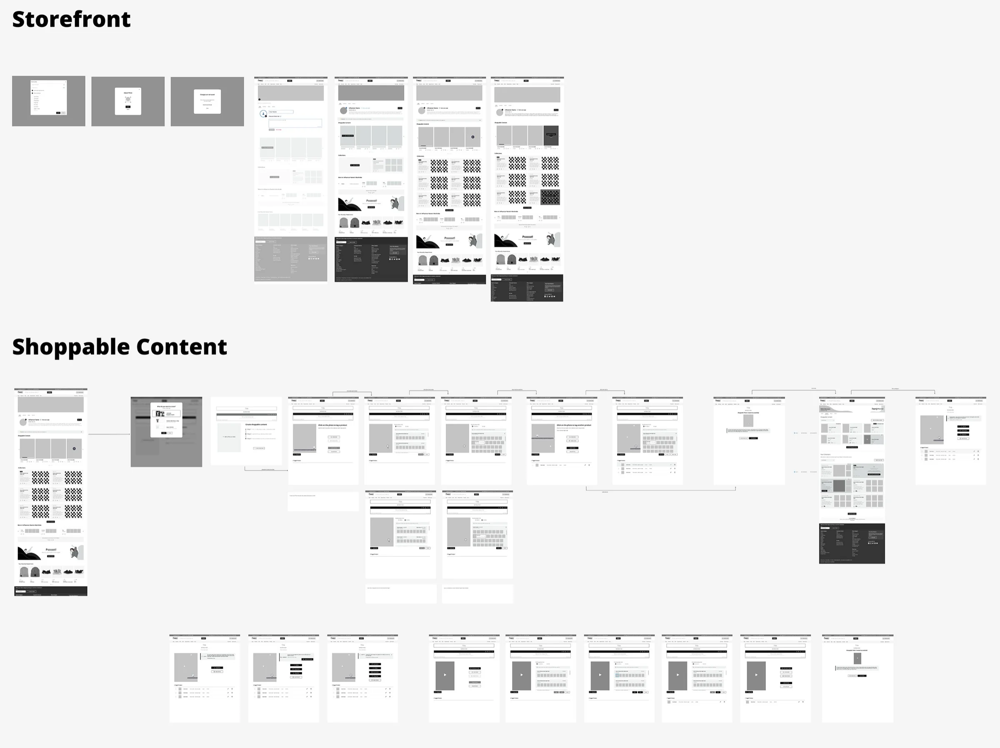
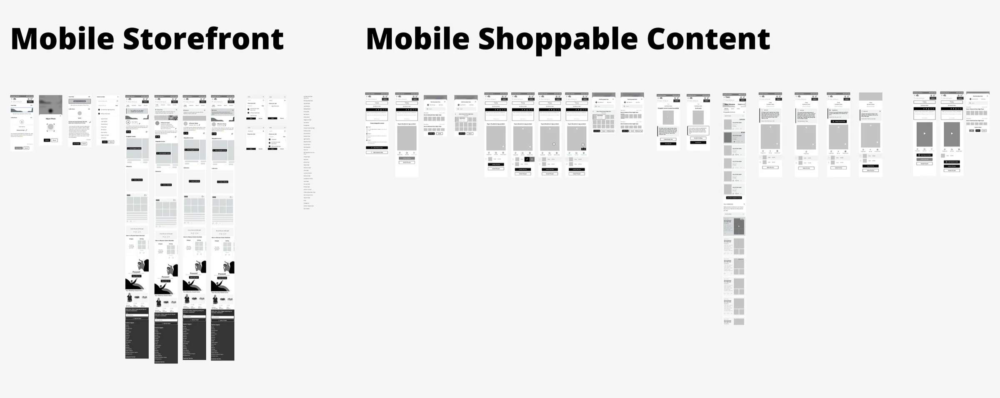
Storefront: a destination worth sharing
The Storefront gave creators a persistent, customizable destination instead of forcing them to share isolated content links. It made their ZIP presence feel more like a personal shopping channel and gave every new post a durable place to live.
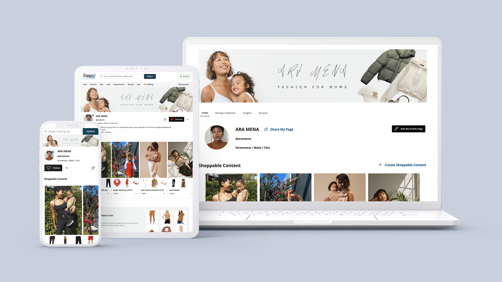
Shoppable Content: making inspiration actionable
Shoppable Content turned lifestyle imagery into a direct path to purchase. The goal was not to decorate product listings; it was to help shoppers understand how items looked in context, then act without losing momentum.
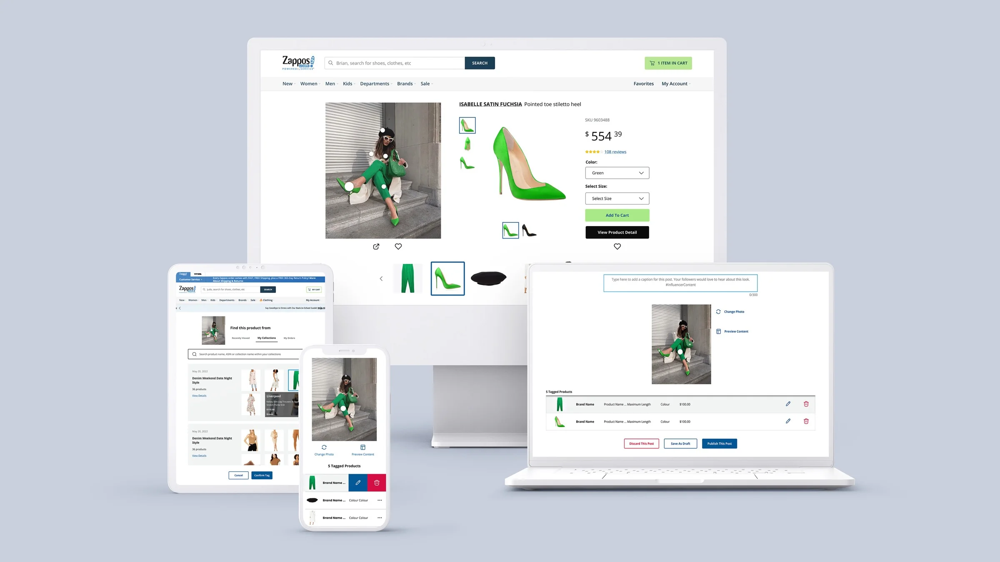
Hub: making repeat creation easier
The Hub became the operational center for repeat creation: a simpler place to manage content, track status, review performance signals, and return to the next publishing task.
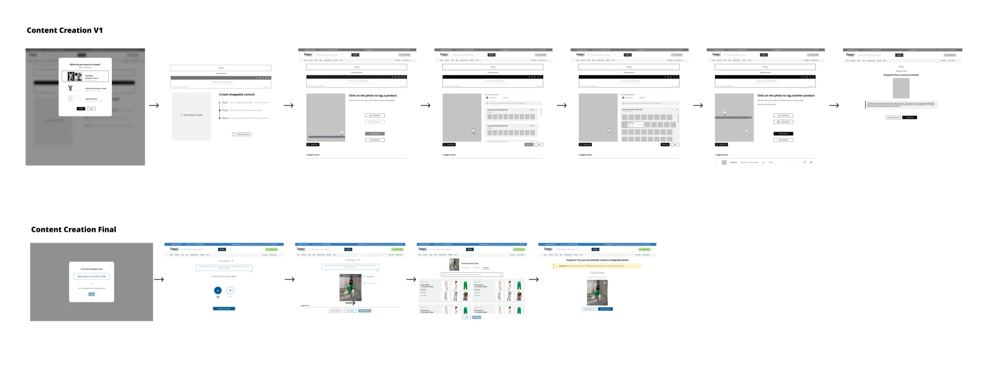
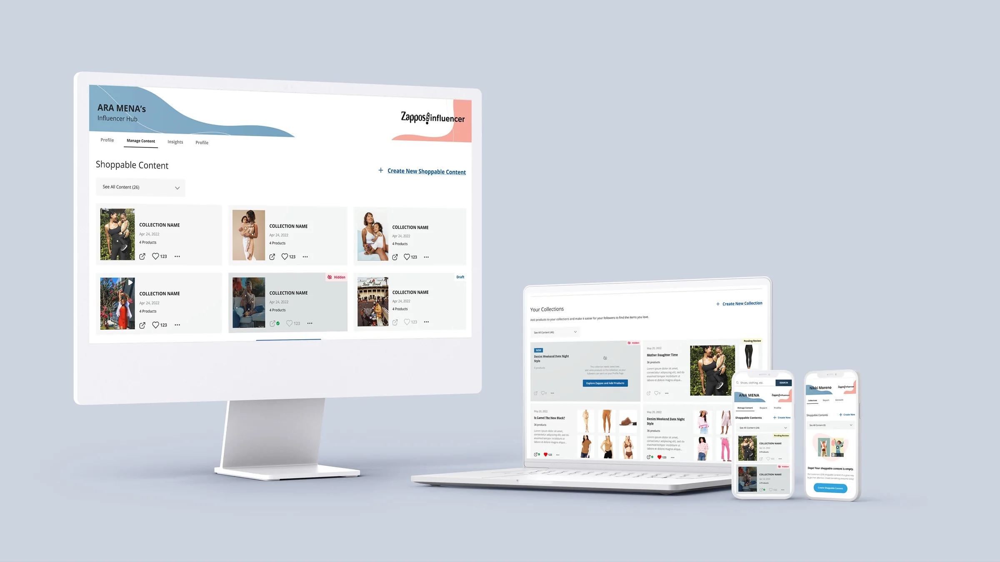
Illustrations & brand
Zappos is known for a peculiar, fun shopping experience, so I designed custom illustrations and iconography to carry that personality across all three surfaces. Participants loved them.
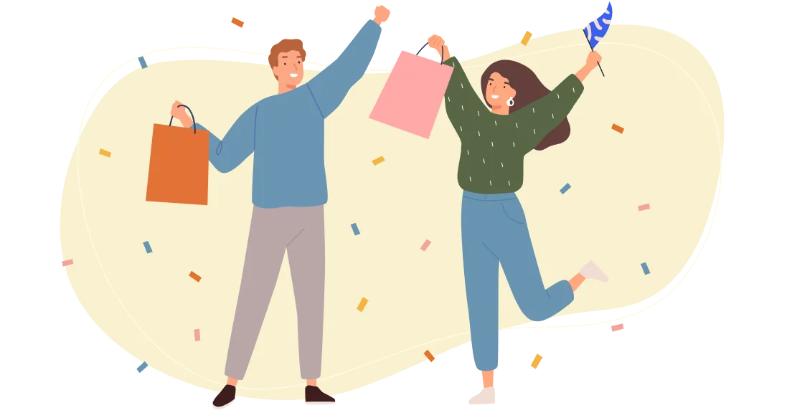
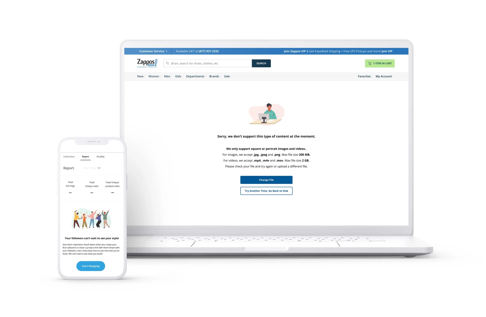
Accessible by design, measured for impact.
Accessibility handoff
Accessibility wasn't a final check. It shipped with the designs. The handoff documented colour contrast, keyboard navigation and screen-reader behaviour for the build team.
“Users of all abilities should be able to understand, use and enjoy the product.”
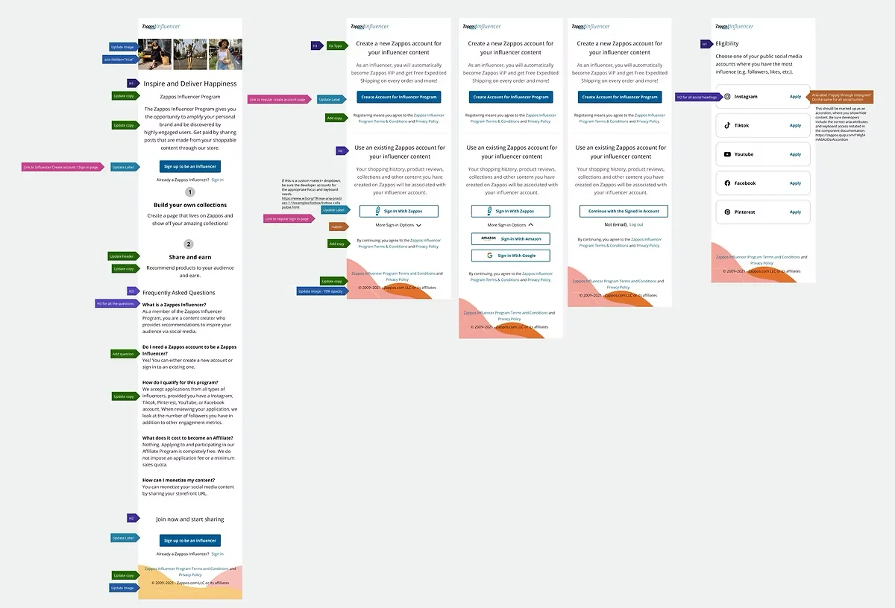
UX metrics
A shared framework to track whether the work was landing, for both sides of the marketplace.
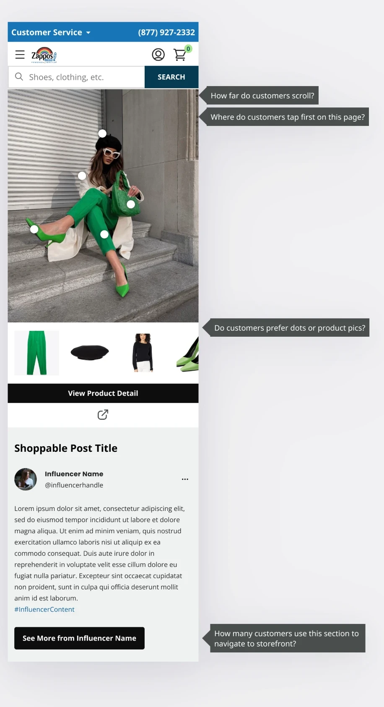
- Time spent exploring content
- Customer satisfaction rate
- Number of outfits explored
- Shoppable content created
- Frequency of new content creation
- Task completion & time to create
Extending the strategy.
After launch, I used the same growth-loop lens to assess where the storefront shopping experience could be optimized next. The follow-up work focused on the shopper side of the loop: reducing friction between inspiration, product exploration, and add-to-cart behavior.
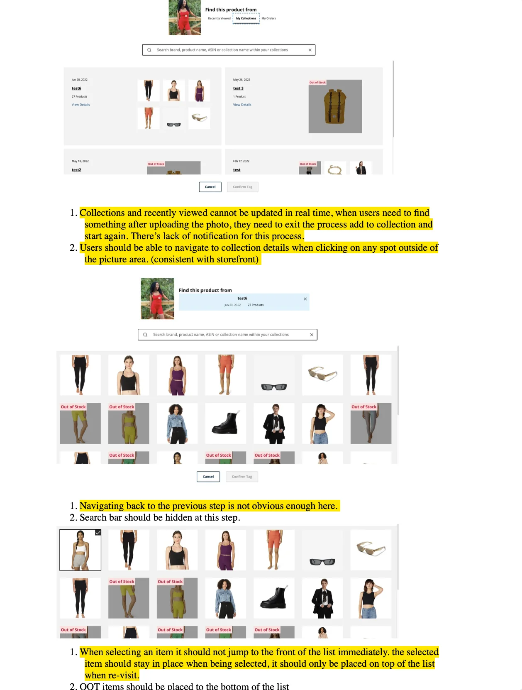
Post-launch UX assessment
Back in the live product, I re-ran the storefront shopping experience against real usage and flagged where it still broke down.
Hypothesis validation
I ran unmoderated concept testing on the customer shopping experience with three defined groups of users, then watched where they actually tapped and how easily they reached add-to-cart.
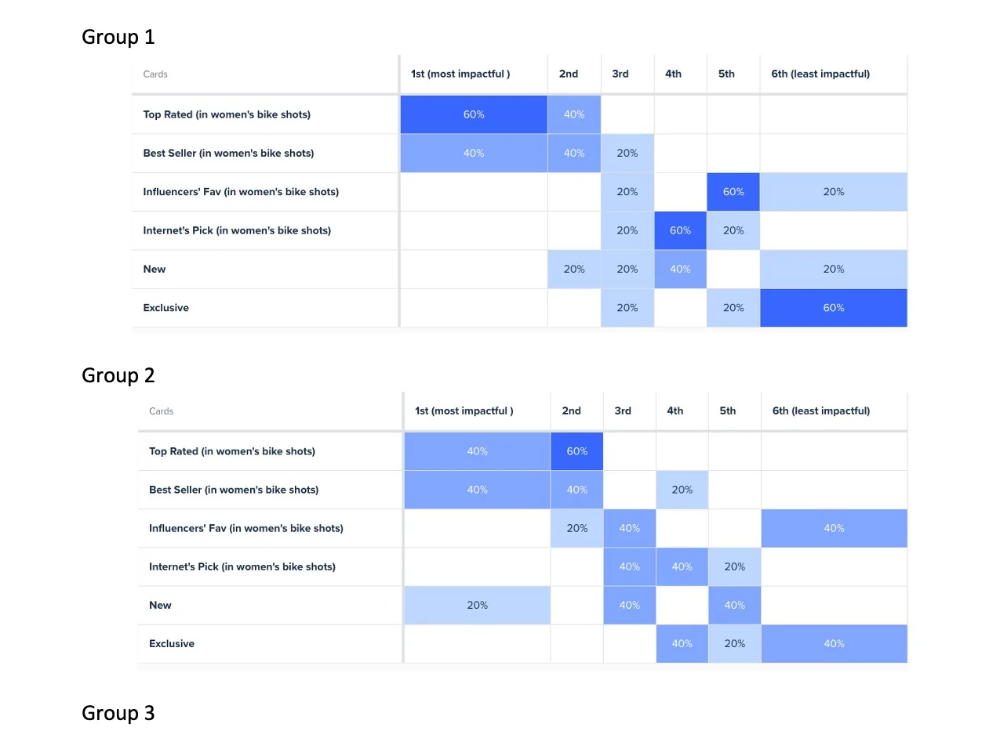
| Concept 7 | P1 | P2 | P3 | P4 | P5 |
|---|---|---|---|---|---|
| Open shoppable photo | ✓ | ✓ | ✓ | ✓ | ✓ |
| Navigate to shorts | ✓ | ✓ | ✓ | ✓ | ✓ |
| Click Add to Cart | ✓ | ✓ | ✓ | ✓ | ✓ |
| Task rating | 5 | 5 | 5 | 2 | 4 |
*Ease of use: 1 = very difficult, 5 = very easy
The resulting concept was included in the team's OP1 planning, giving the next phase a clearer evidence-backed direction.
More creators. Far more content.
Following the launch period, the redesigned creator experience was associated with:
Directionally, we also saw stronger shopper engagement signals, including lower bounce rate and higher average time on site. Accessibility improvements were designed into the handoff so the experience could scale with a stronger baseline for keyboard, screen-reader, and responsive behavior.
These metrics mattered because they mapped directly to the original product problem. ZIP did not need a more polished creator interface for its own sake; it needed a system that made influencers more likely to return, create, and publish content shoppers could act on.